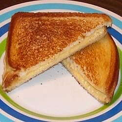

Grilled Cheeese

Grilled cheese sandwich is very simple and tasty. It tastes a bit salty and crispy. All you need is a bread and cheese.
I think thats it lol, so here is basically what you do to make this, though its pretty
obvious
Ingredients
-
4 slices of white bread
-
Butter
-
2 slices Cheddar cheese
Steps
-
Preheat skillet over medium heat
-
Generously butter one side of a slice of bread.
-
Place bread butter-side-down onto skillet bottom and add 1 slice of cheese
-
Butter a second slice of bread on one side and place butter-side-up on top of sandwich
-
Grill until lightly browned and flip over
-
Continue grilling until cheese is melted